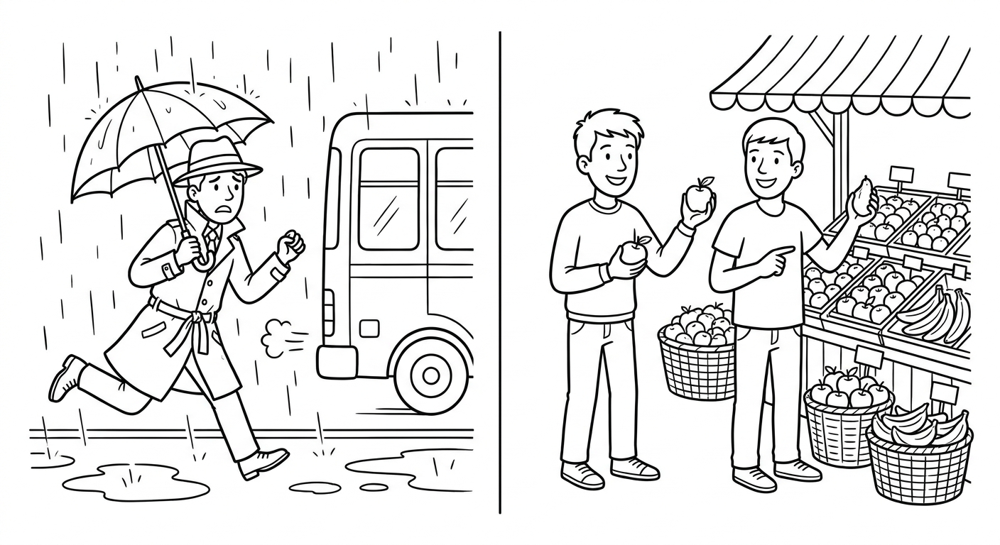

B3 Foundation Test 2
What happened, telling your story, comparing options, and recommending with feeling. Show that you can explain a past problem in order, understand a story, compare choices, and give a strong recommendation.

| Section | Points | Score |
|---|---|---|
| 1. Listening | 25 | ____ / 25 |
| 2. Reading | 20 | ____ / 20 |
| 3. Writing | 20 | ____ / 20 |
| 4. Grammar and Vocabulary | 35 | ____ / 35 |
| Total | 100 | ____ / 100 |
Suggested time: 70 minutes. The teacher will read the listening text twice. You may take short notes. In open tasks, tell your story clearly — communication matters as well as accuracy. (O professor lerá o texto duas vezes. Conte a história com clareza: a mensagem vem primeiro.)
Give students 45 seconds to preview Questions 1–5. Read the complete script twice at natural but careful B3 speed, with a 30-second pause between readings. Do not explain vocabulary during the test. Total recommended time: Listening 12 min, Reading 15 min, Writing 18 min, Grammar/Vocabulary 25 min.
Listening: A Difficult Morning and a New Market
Marina: Hi, Paulo! I called you yesterday morning, but you didn't answer. What happened?
Paulo: Sorry! I had a really difficult morning. First, I woke up late because my alarm didn't ring. Then I ran to the bus stop, but I missed the seven o'clock bus.
Marina: Oh no. Were you late for work?
Paulo: Yes, I was. I arrived at nine, and my boss wasn't happy. I explained the problem, and after that I stayed one extra hour to finish everything.
Marina: Poor you! Listen, I went to that new street market on Saturday. It's much cheaper than the supermarket, and the fruit is extremely fresh. But it was too crowded in the morning.
Paulo: Sounds great. If I finish work early on Friday, I will go with you.
Marina: Perfect. Let's meet at the market entrance at six.
Paulo: So, Friday at six, at the market entrance. Right?
Marina: Exactly!
Answer with a word, phrase, or short sentence.
Why did Paulo wake up late?
His alarm didn't ring.What happened at the bus stop?
He missed the seven o'clock bus.What did Paulo do after he explained the problem to his boss?
He stayed one extra hour to finish everything.Give two reasons Marina likes the new market.
It is much cheaper than the supermarket; the fruit is extremely fresh.When and where are they going to meet?
On Friday at six, at the market entrance.Reading: Ana's Weekend Story
Hi Carla,
Last Sunday, my sister and I went to the mountain town of Serra Velha. First, we took the early train, because the train is cheaper than the bus. When we arrived, the weather was terrible — it was too cold to walk. So we visited the small museum first. It was the most interesting place in the town, and the guide was incredibly friendly.
Later, the sun came out, and we walked to the old bridge. There were many tourists there, but the view was absolutely amazing. It was the best day of my month!
You should go before the winter — but don't go on a Monday, because the museum isn't open.
Ana
Why did Ana and her sister take the train?
Because the train is cheaper than the bus.Why did they visit the museum first?
Because it was too cold to walk (the weather was terrible).Copy two words or phrases that show Ana loved the view or the day.
Any two: “absolutely amazing”; “the best day of my month”; “the most interesting place”; “incredibly friendly”.What advice does Ana give Carla? Give both parts.
Go before the winter; don't go on a Monday because the museum isn't open.Writing: Tell Your Story
Last week you had a problem: you lost something, missed a bus, or arrived late. Write 60–80 words to a friend. Include:
- what happened, in order (use first, then, after that);
- at least three verbs in the simple past;
- how you felt (use was/were);
- one comparison or one recommendation with should;
- a friendly closing.
Hi Carla! You won't believe my Tuesday. First, I lost my bus card, so I walked to work. Then it started to rain, and I was completely wet when I arrived. After that, my boss saw me and gave me a hot coffee — she was very kind. Now I keep my card in a small bag; it is safer than my coat pocket. You should always keep some extra money for emergencies! Talk soon, Bia.
| Writing criterion | Points | Teacher score |
|---|---|---|
| Completes the communicative purpose and includes required details | 8 | ____ / 8 |
| Story is in order and understandable | 4 | ____ / 4 |
| Target language (simple past, was/were, comparison or advice) supports meaning | 4 | ____ / 4 |
| Vocabulary, spelling, and punctuation are clear enough | 4 | ____ / 4 |
Reward a clear story told in order. Do not deduct the same error twice. Irregular-verb mistakes that do not block understanding (for example, “goed”) should cost less than a story with no sequence. Message completion comes before accuracy.
Grammar and Vocabulary in Context
Complete or rewrite each everyday situation.
Write the question for this answer: “I arrived at ten o'clock.”
What time did you arrive? / When did you arrive?What to Keep and What to Practice Next
| Skill | Score | Next action |
|---|---|---|
| Listening | ____ / 25 | Listen for what happened, the order of events, and the final plan. |
| Reading | ____ / 20 | Follow the story order and find reasons, feelings, and advice. |
| Writing | ____ / 20 | Tell the story in order with first, then, and after that. |
| Grammar/Vocabulary | ____ / 35 | Practice irregular past forms, didn't + base verb, and -er / most forms. |